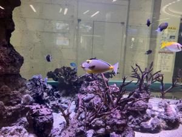
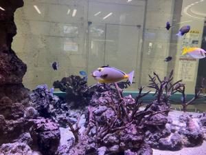
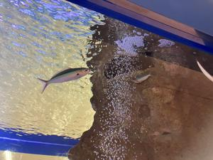

うるがいの話 ある日
最新: 門扉を開けて【うるがいの話 ある日】とは 一日だけのプログです
『うるがいの話』の最新一日だけのプログで、通信料が少なく経済的だ。カニの画像をクリックすると全ての日付が載る『うるがいの話』サイトを表示します
|
|
【うるがいの話】 うるがい(ｳﾙｶﾞｲ urugai)とは、『もずくがに』の名前でとても大きくなります。 |
|---|---|
|
|
【カミマヤーの話】 猫のことを方言でマヤーといいます。カミマヤー（kamimayaa）とは、神の猫のことです。 |
|
【たながぁの音楽】 たながぁ（ﾀﾅｶﾞｰ tanagaa）とは手長えびのことで、何種類かあり大きいのは車 エビぐらいになります。 |

|
【ぶながぁの話】 ぶながぁ(ﾌﾞﾅｶﾞｰ bunagaa)とは、赤い髪の毛、赤い身体、そして身長は１ｍ２０ｃｍ ぐらい、川の蟹を食べているの目撃された。場所は沖縄県国頭郡大宜味村のと ある村僕の隣近所に住んでいる爺さんから、聞いた話です。 |
|
|
【ギーマの話】 ギーマ(giima)とは、山原の里山に咲くスズランに似た、 花を付けます。実は食べられます、 気が付くと口の周りが紫になっています。 |
2023年05月15日 (月）門扉を開けて
15:08
 

ジョギング途中、手に袋を持った８０歳ぐらいのオバーサンに声をかけられる
この家に入りたいだけど、門を開けてくれないと頼まれる。１０メートルもあ
りそうな立派な門扉、ハイと停めぐなどを外す。よしと、門を開けようとする
がビクともしない。オバーサンが、門を乗り越え、反対側あけてみてという。
１メートル以上もある、鉄作を乗り越える。もう一度、停めぐを確認する。問
題ない、精一杯ちからをこめて門を開ける。１メートルほど開ける、オイルシ
テオケヨナと思いながらも突然のミッションをこなす。かなりの豪邸だが、門
の近くにインターフォンが、必要だけとオバーサンに話すとハっ？と耳が遠い
のか聞き直された。おっと、午前中、家の駐車場のジャバラ式の門を、開けよ
うとすると右側の取っ手の付け根のパッキンが外れた。ほー、寿命かとゴムテ
ープを使い応急処置を施したばかりだった。

司法書士に頼んだ生前贈与が完了したので、資料を取りにいった。特例贈与財
産の確定申告のために、贈与契約書を眺めていたら、期待していた贈与額が無
く物件の明細だけが羅列されているだけだった。確定申告のためには、贈与さ
れた金額が必要なのだ。え！、と贈与金額が無いのですがと尋ねると、無償贈
与であることと、司法書士の手続きでの必要な金額と、確定申告に必要な税で
の金額とは違います、そのために税理士に１０万も費用をかけて頼むのですか
らと言われる。ム！としてしまった。
１５時０１分 ビットコインの総資産 ￥１０、８０８（↑２３９）